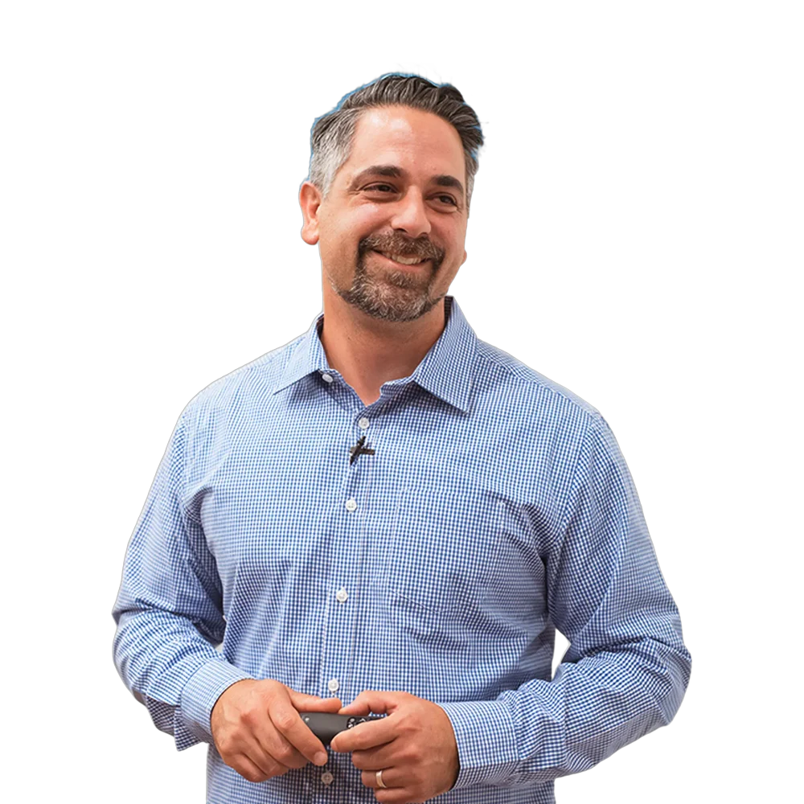
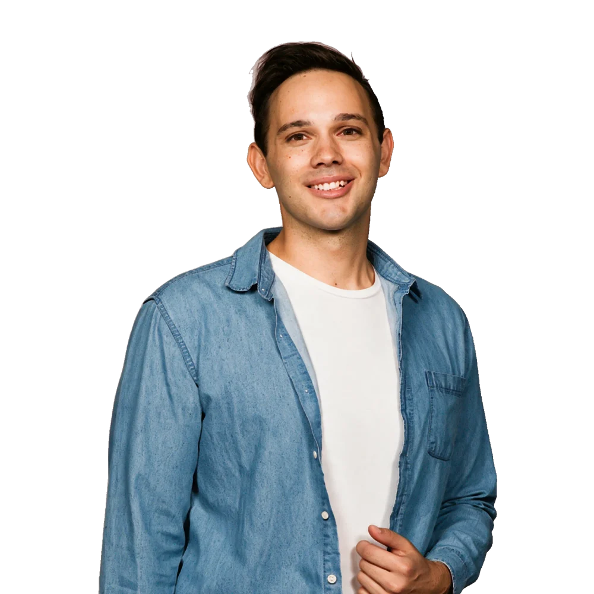

Result 01 · Verified  “Luke’s ability to understand our business and speak with our voice is his greatest asset and perhaps the biggest problem we’ve had in the past with previous marketing efforts.” Peter GiannakisDirector, HG Coffee School
Result 02 · Verified  “We saw an immediate increase in results; more leads being delivered, the cost per lead decreasing, amazing quality of creative, and well-thought-out copy that converts.” Dav LipasaarDirector, SAAR Media& Entertainment
Result 03 · Verified “Leads used to get followed up whenever I found a spare minute between clients. Luke helped streamline our enquiries and lead capture so everything is in one place and tracked from start to finish. In this game, the fastest salesman gets the deal.” Sam RobertsPrincipal Dealer, Revé Auto Haus